Работа фермы
Отчёт о том, как устроена автоматизация. Цифры охвата лежат в отдельном отчёте по тестам. Здесь — блоки панели, что оператор задаёт, что скрипт делает сам, и записи реальной работы.
Записи
Три записи. Первая — обход блоков панели, снятый с рабочего экрана 8 октября: полная задача, прогрев, выгрузка, статистика, расписание, вовлечение, оформление, вход, регистрация, уникализация и отчёты. Вторая — живая карта в момент прогрева телефонов. Третья — сам прогрев: подписка Happ, открытие Instagram и листание Reels.
Полная задача
Это основной дневной контур. Один запуск собирает три стадии и сам доводит их до статистики.
- Прогрев перед каждым временным слотом. Длительность от 1 до 240 минут. Лайки и подписки во время прогрева включаются отдельно. По умолчанию лента только смотрится.
- Дневной план. Дата, бренд и креатор. Ролики можно отдать всем одинаковые или назначить свои: до трёх файлов на аккаунт, у каждого своё описание и своё время. Одинаковое время у разных аккаунтов публикуется вместе. Пример слотов: 09:00, 13:00, 18:00.
- Статистика и сайт. После публикаций скрипт ждёт заданные секунды, по умолчанию 90, снимает просмотры, лайки, комментарии, репосты, охват и нативные метрики и передаёт подтверждённые данные на клиентский портал.
Файл уникализируется под каждый аккаунт. Движок: авто, ffmpeg или OpenCV. Зеркалирование, публикация Instagram через Edits и публикация TikTok через Studio включаются отдельными переключателями. План сохраняется и переживает перезапуск панели.
Пример. 6 октября на телефоне 3, аккаунт @vikamoreipesok, полная задача прошла прогрев, выложила ролик и сняла статистику. Публикация: instagram.com/reel/DeKSzFBNHzq.
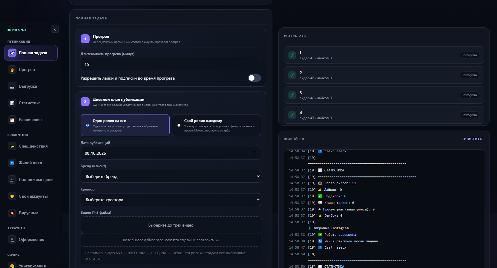
Прогрев
Отдельный режим, когда публиковать не нужно. Оператор выбирает соцсеть — Instagram, TikTok или YouTube — и устройства. Скрипт синхронизирует часы, поднимает Wi-Fi, подключает подписку Happ, выбирает сервер по пингу и открывает ленту.
Длительность 1–240 минут. Режим по умолчанию — просмотр. Если разрешить действия, работают автолайки, автоподписки и автокомментарии со своей вероятностью. В форме стоят 60% для лайка и 40% для подписки. Комментарии выключены, пока их не включат.
Телефоны идут волнами, чтобы не поднимать все аппараты разом. На записи 14:03 задача была такой: Instagram, 18 устройств, 15 минут, первая волна — восемь телефонов. Журнал фиксирует «Рилс #1», досмотр или ранний свайп, остаток времени. Зеркало экрана остаётся на столе: видно ту же ленту, которую листает скрипт.
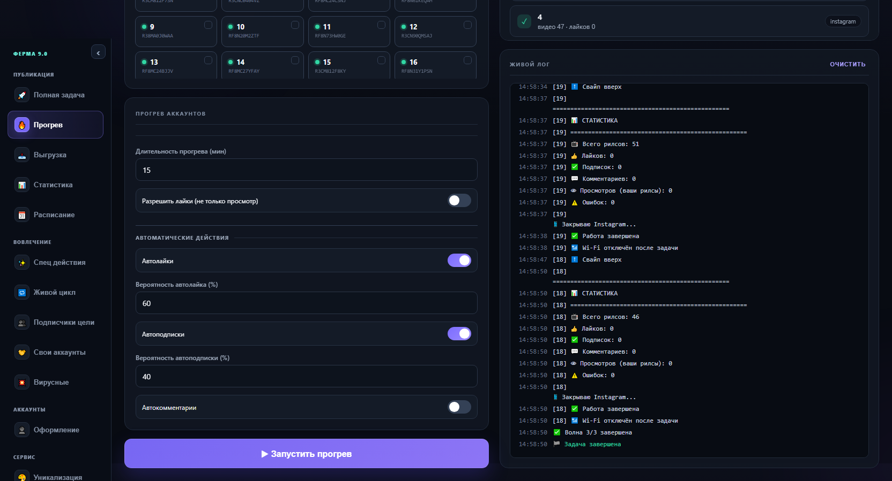
Выгрузка
Один ролик без дневного плана. Оператор задаёт бренд, креатора, файл, описание и хэштеги. Уникализация включена по умолчанию, зеркало — по желанию. Для телефона доступны те же пути публикации: Instagram через Edits, точный файл и экспорт в 2K, и TikTok через Studio с автомонтажом. Пока ролик уходит, на панели можно держать зеркало экрана.
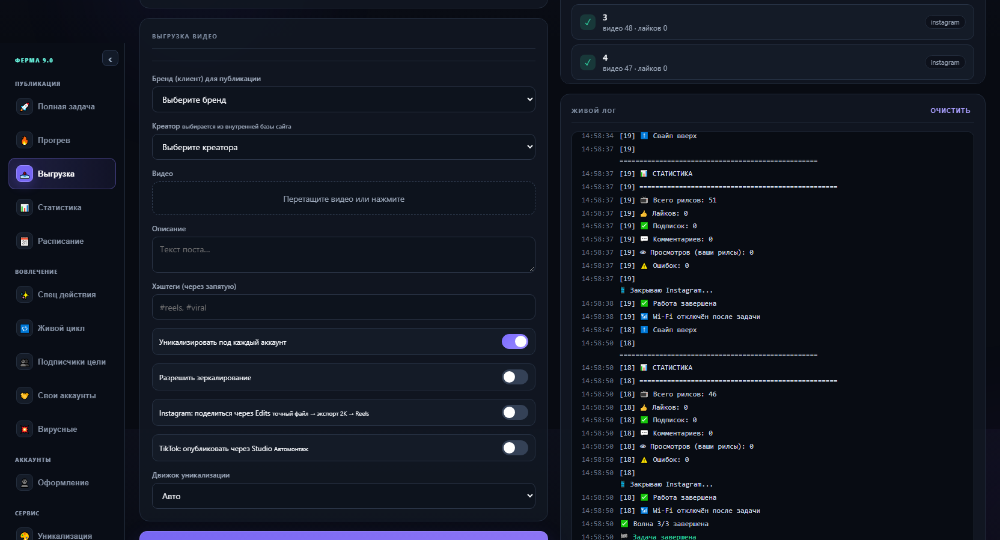
Статистика
Скрипт открывает последние публикации прямо из профиля. Ссылки не обязательны. Можно взять последние N роликов каждого аккаунта, весь отслеживаемый список, только указанные ссылки или свою ссылку на каждый телефон.
Метрики отмечаются отдельно: просмотры, лайки, комментарии, репосты, охват и показы, время просмотра и удержание. Родная статистика сети включается, когда она доступна. Insights Instagram открываются у владельца ролика на профессиональном аккаунте. Если экран их не отдаёт, в отчёте остаются публичные цифры, и это помечается. Снимок экрана сверяется с собранными числами. Подтверждённые метрики уходят на портал.
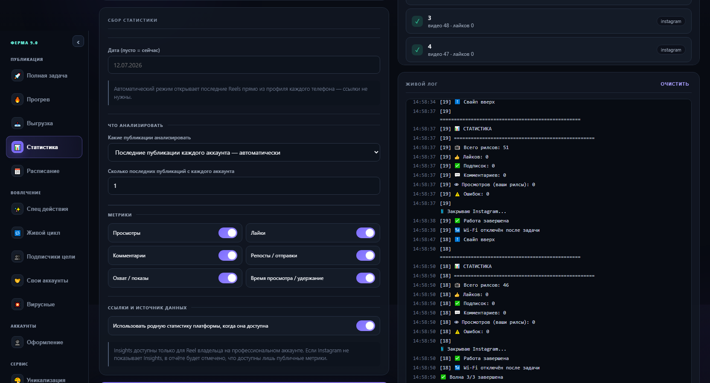
Расписание
Именованные сценарии. В блоке: название, время старта и цепочка действий — прогрев, выгрузка, самолайкинг и другие шаги. У каждого шага свои телефоны и свои облачные профили. Заготовки хранятся отдельно от запущенного плана и подставляются кнопкой «Загрузить». Заготовку можно дублировать или удалить, не трогая живое расписание.
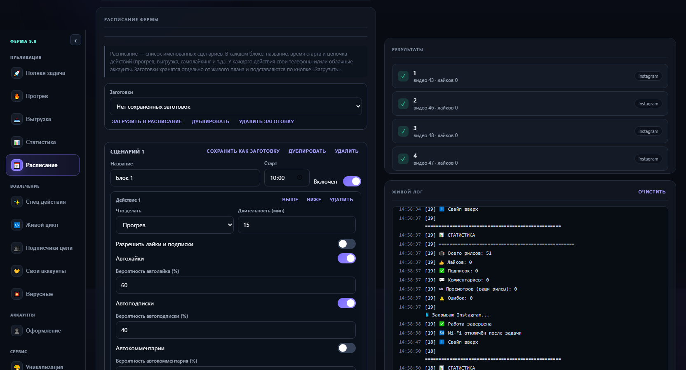
Спецдействия
Точечная работа по списку целей. В поле пишутся один или несколько ников через запятую. Выбранные профили могут подписаться, поставить лайки, оставить комментарий, сделать репост, сохранить ролик и скопировать ссылку. Перед лайком задаётся просмотр, по умолчанию 15 секунд, максимум 90. Число роликов на одно действие — не больше пяти. Пересылка выполняется только своим аккаунтам фермы, с коротким случайным ответом. Между аккаунтами ставится интервал.
Отдельный список действий для телефонов: целевая подписка, лайки последних роликов, подписка вместе с лайками, подписка на подписчиков цели. Один и тот же ник выполняется на каждой отмеченной соцсети.
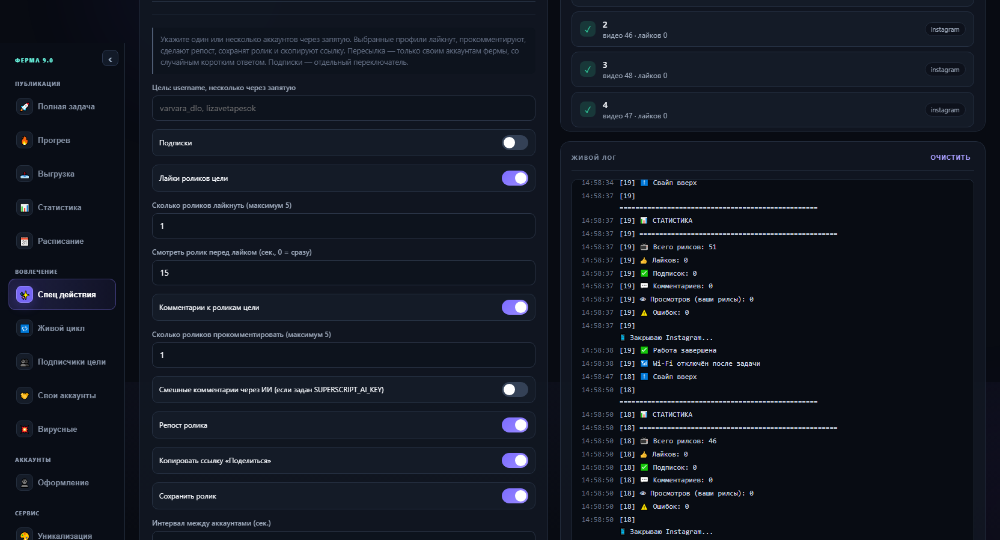
Живой цикл
Непрерывная очередь сессий. Аккаунты смотрят ленту и рекомендации, заходят в профили, лайкают свои публикации. Сообщения уходят только между выбранными своими аккаунтами. Чужим ферма не пишет.
Одна сессия длится от 3 до 40 минут, в форме стоит 12. Одновременно открывается до 8 профилей AdsPower, комфортная партия 3–4, и до 8 телефонов. Плотность: тише, обычный или живее. «Живее» добавляет лайки и заходы. Переписка своих включена отдельным переключателем. Стоп снимает очередь.
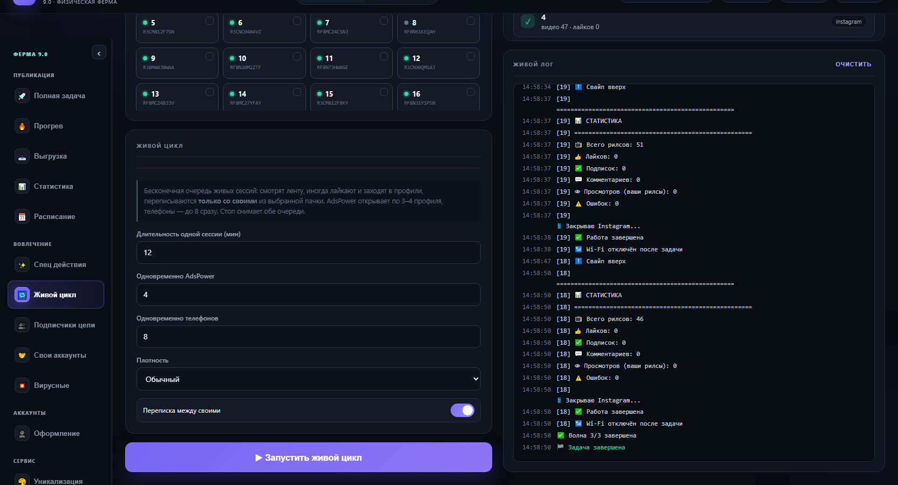
Подписчики цели
Выбранные аккаунты открывают профиль персонажа, читают его подписчиков и подписываются на указанное число людей, до 100. Свой аккаунт пропускается. Режим работает в Instagram и TikTok. YouTube список подписчиков не отдаёт, поэтому эта сеть в действие не входит. Между аккаунтами задаётся интервал.
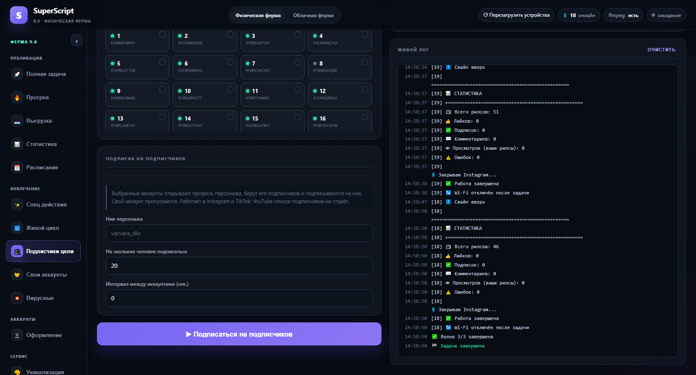
Свои аккаунты
Аккаунты одной пачки смотрят ролики друг друга: лайкают и комментируют. Свой профиль скрипт пропускает. В пачку попадают все отмеченные профили, поэтому для одного запуска отмечают аккаунты одного бренда. Подписки выключены по умолчанию и включаются отдельно. Лайки и комментарии ограничены пятью роликами на профиль. Текст комментария может готовить модель, если задан ключ.
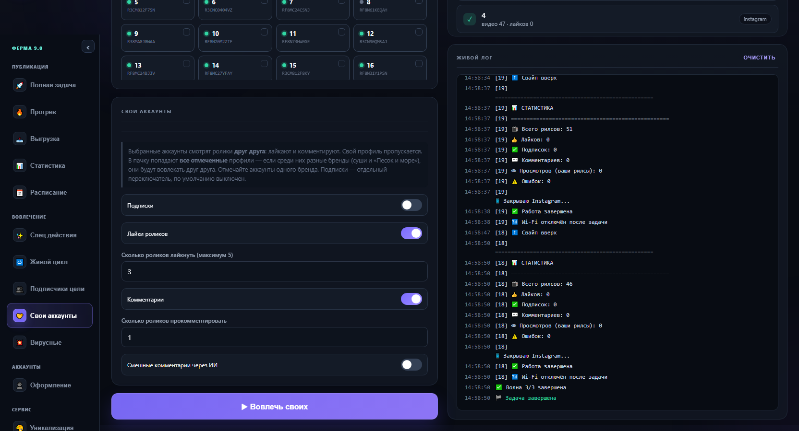
Вирусные
Скрипт берёт из уже собранной статистики ролики с большим числом просмотров и рабочей ссылкой и оставляет короткий комментарий. Порог в форме — 10 000 просмотров, на профиль до пяти роликов. Работает на телефонах и в AdsPower. Если ключ модели не задан, текст берётся из библиотеки «Юмор».
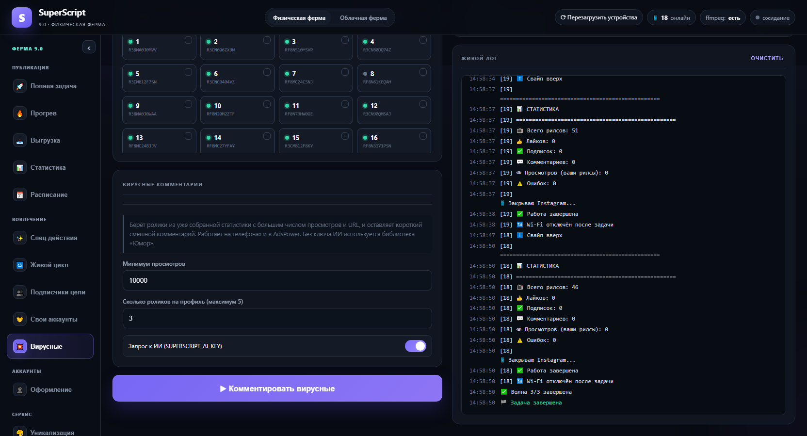
Оформление
Три действия. Проверка профилей со скриншотами. Установка только недостающих аватаров. Полное оформление: фото, видимое имя и описание по карточке бренда. Карточка своя у каждого телефона и у каждого профиля AdsPower. Фото выбирается из папки-базы или загружается своё. Кнопка «Распределить разные фото» раскладывает базу по аккаунтам. Карточки можно скопировать во все выбранные соцсети. Технический ник и ссылки скрипт не меняет.
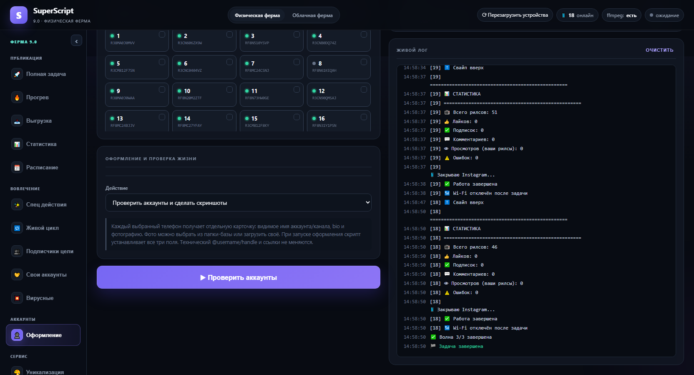
Вход
Только облачная ферма. Оператор выбирает профили AdsPower и соцсети, заполняет карточки и нажимает вход. Перед открытием профиля прокси ротируется. Если сеть показывает CAPTCHA, код из письма или подтверждение устройства, окно AdsPower остаётся открытым. Проверку проходит человек. Скрипт сам видит успешный вход и продолжает. CAPTCHA автоматически не обходится. Ожидание ручного шага — от 1 до 15 минут.
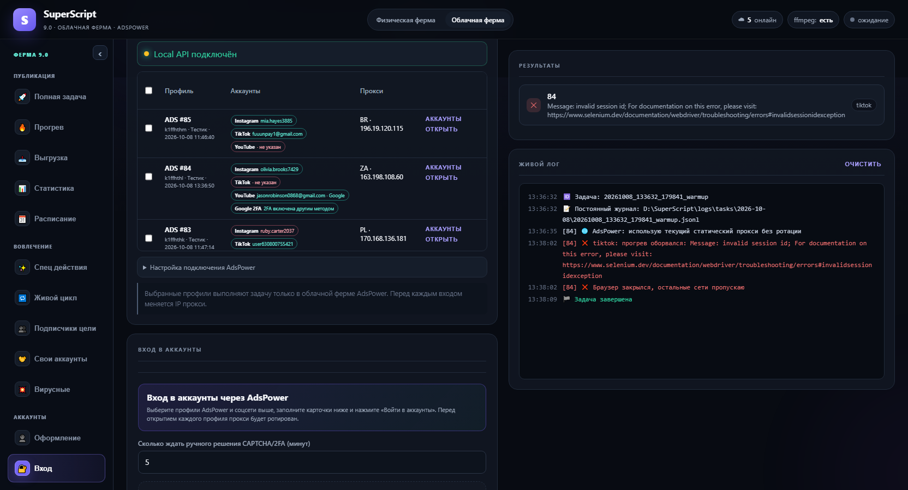
Регистрация
Тоже только облако. Порядок фиксированный: подготовительный просмотр обычных сайтов, вход в Google, проверка двухэтапной защиты, затем Instagram, TikTok и YouTube. Каждая успешно открытая сеть получает свои 10 минут прогрева только просмотром. Сеть, которая не открылась, пропускается: в журнале остаётся причина и скриншот.
Для этой задачи IP профиля не ротируется. Почта и пароль в журнал не пишутся и удаляются из памяти после запуска. Если двухэтапная защита Google уже включена, она не меняется. Если её нет, подключается Google Authenticator, ключ хранится локально в зашифрованном виде. CAPTCHA, телефон и подтверждение устройства остаются ручными: окно выходит на передний план, задача ждёт. После регистрации логин и пароль новой соцсети появляются в карточке профиля.
Группа профилей, число одновременных окон и набор сетей задаются до старта. Одновременно удобно вести один или два профиля.
Пример с записи 8 октября, профиль облачной группы. Скрипт сам открыл девять обычных сайтов, вошёл в заданную почту, посчитал код Google локально, заполнил анкету Instagram и оставил окно на коде из письма. Дальше открыл TikTok той же почтой и дошёл до даты рождения, затем подключил YouTube из уже вошедшего Google. Кадры этой записи:
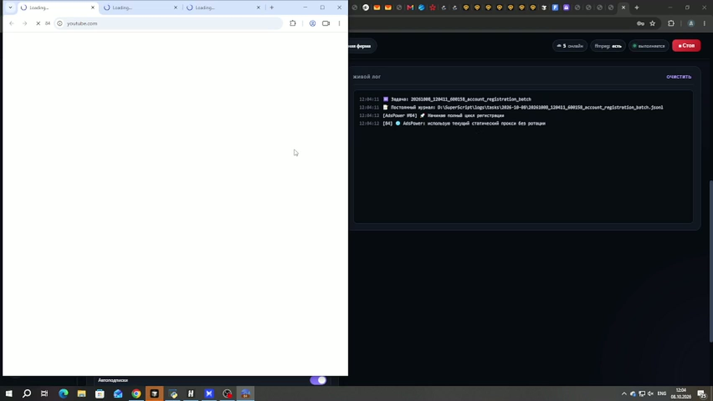
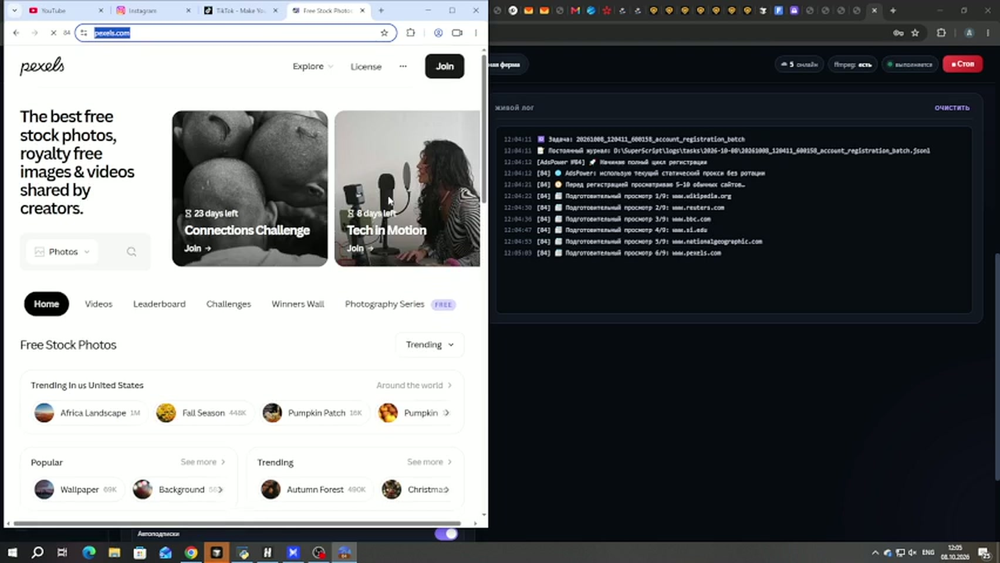
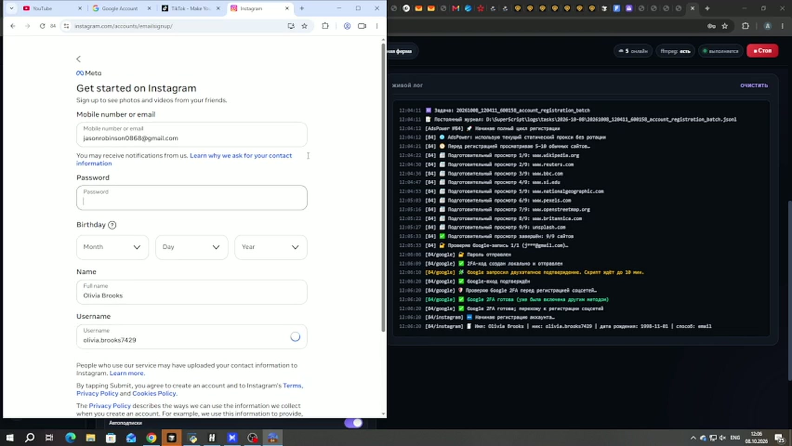

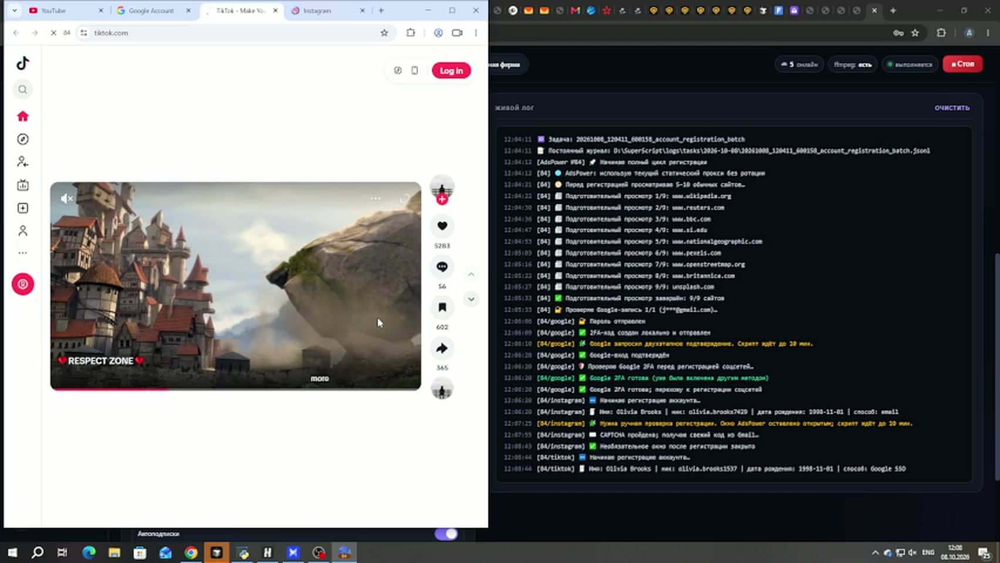
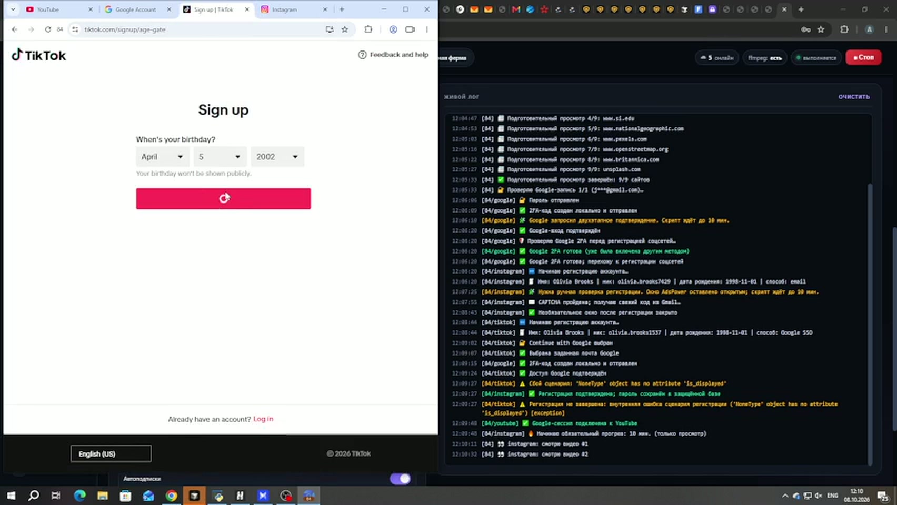
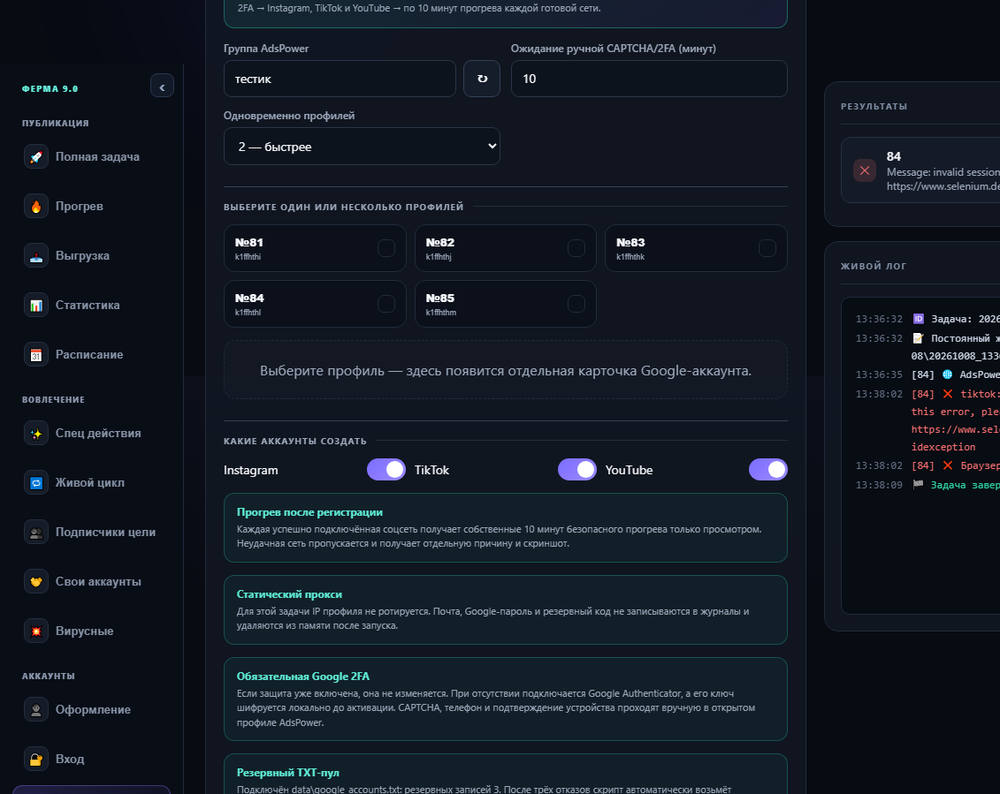
Уникализация
Отдельный сервис, когда копии нужны заранее. Оператор кладёт файл и указывает число копий, от 1 до 200, в форме стоит 20. Движок авто, ffmpeg или OpenCV. В полной задаче и в выгрузке та же уникализация включается на каждый аккаунт сама, чтобы один исходный ролик уходил разными файлами.
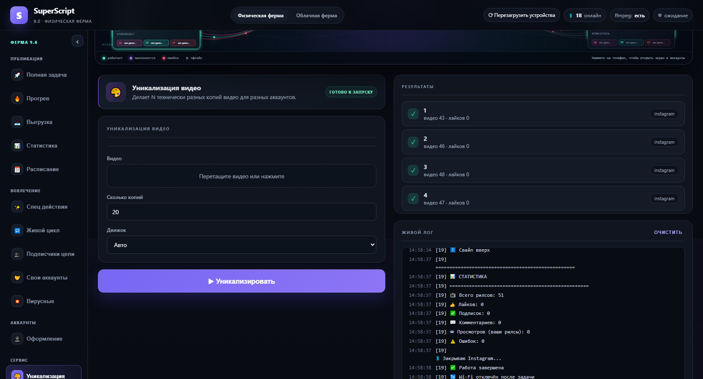
Отчёты и связь
Раздел «Отчёты» собирает аккаунты, которых не оказалось на устройстве: регистрация не дошла или сессия вылетела. Дату можно сузить или оставить пустой и получить весь журнал.
Рядом с задачами работают служебные контуры. Кнопка перезагрузки поднимает подключённые телефоны. Перед сетью на телефоне скрипт проверяет Wi-Fi и свою подписку Happ. У облачного профиля для обычных задач прокси меняется перед входом, для регистрации остаётся статическим. Telegram-бот ставит в панель прогрев, публикацию, статистику, вовлечение и аудит. Агент забирает метрики и снимки и отдаёт их на клиентский портал. Живая карта показывает, какой телефон в работе, какой ждёт и на какой задаче стоит ферма.
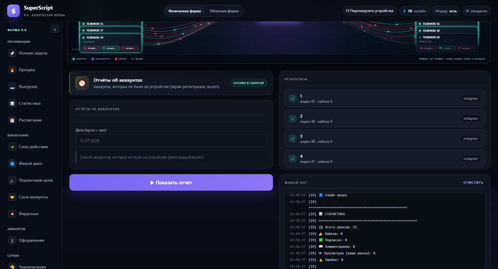